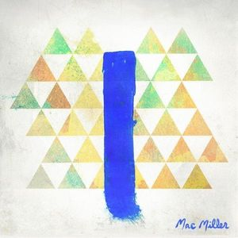

Celebrating the Music of the late Mac Miller
Photo by The Come Up Show on Flickr under (CC BY-ND 2.0). The photo can be found here.
Malcolm James McCormick, commonly known as his stage name of Mac Miller, was a singer and rapper from 2007 until 2018. During that time he produced several mixtapes and five albums, with his last and final album, "Swimming" releasing in 2018. Popular songs include "Donald Trump", "Weekend", "Stay", and "Watching Movies". Mac Miller was a pittsburgh rapper who launched his career through witty raps and upbeat instrumentals. He sadly passed away September 7th, 2018 at the age of 26, shortly before he was set to go on tour for his latest album. The music below are samples from various albums he produced throughout his life. Music is explicit and is best listened to with headphones.
Missed Calls off of Blue Slide Park
Weekend(feat. Miguel) off of GO:OD AM
Stay off of The Divine Feminine
2009 off of Swimming
This tribute to the music of Mac Miller was created by Brett Pizzi. This is for an assignment for Jou3363 at the University of Florida.